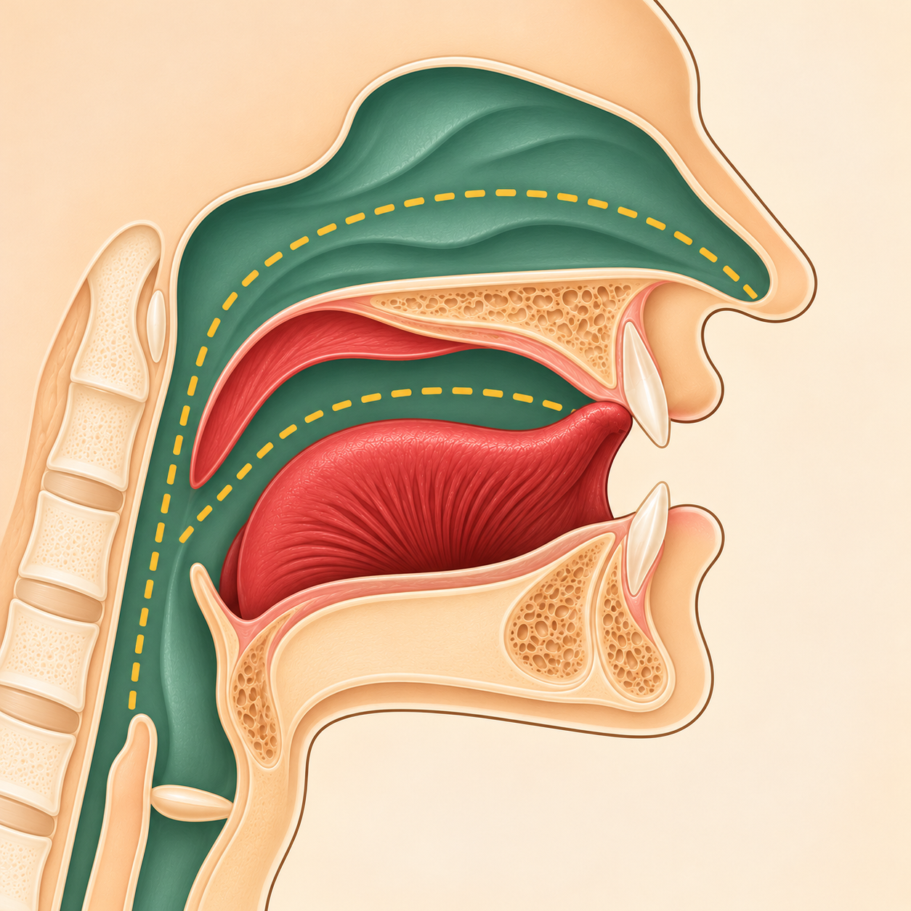
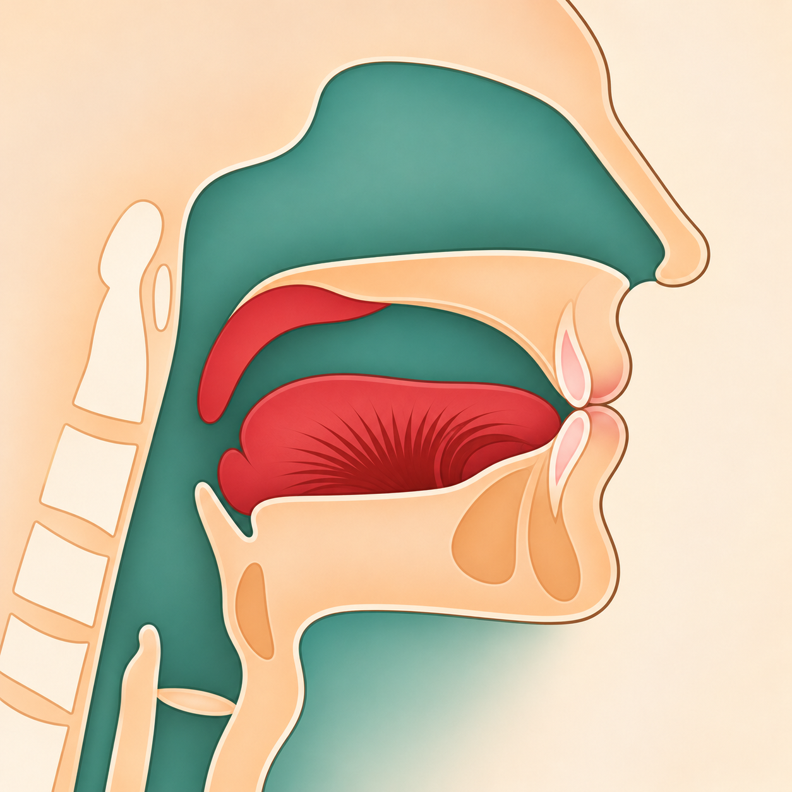

Тел очы үз урынында; борын яңгырашы ишетелә.
Коръән әлифбасын укыту методикасы
Гунна сыйфаты
Нун һәм Мим хәрефләрендә ишетелгән борын яңгырашын танытабыз.
01 · Гунна нәрсә ул?
Гунна — борын яңгырашы
ن+م→Гунна сыйфаты
Гунна Нун һәм Мим хәрефләренә хас. Бу — аерым хәреф түгел, аларның яңгырашындагы сыйфат.
Әл-Хайшум — борын куышлыгының эчке өлеше. Ул Гуннаның резонатор мәхраҗы.
02 · Ике хәрефтә күрәбез
Мәхраҗны да саклыйбыз

1Әл-Хайшум: борын куышлыгы
2Нун: тел очы үз урынына тия
Нунны әйткәндә телнең эшен күрсәтәбез һәм борын яңгырашын тыңлатабыз.

1Әл-Хайшум: борын куышлыгы
2Мим: ике ирен йомыла
Мимне әйткәндә иреннәрнең йомылуын күрсәтәбез һәм борын яңгырашын тыңлатабыз.
03 · Бергәләп тыңлыйбыз
Без укыйбыз — укучы кабатлый
Иреннәр йомыла; борын яңгырашы ишетелә.
Тикшерү өченКыска гына борынны кысып карыйбыз: яңгыраш үзгәрә. Аннары гадәттәгечә, борынны кыспыйча укыйбыз. Бу — аңлату өчен генә күнегү.
Истә тотабызНун белән Мимнең үз мәхраҗларын саклыйбыз. Һәр очракта авазны ике хәрәкәгә сузмыйбыз; озынлык кагыйдәләрен соңрак аерым өйрәнәбез.
Чыганак: «Тәҗвид 1», Әл-Хайшум һәм Гунна бүлекләре. Рәсемнәр Нун һәм Мим дәресләреннән алынды.